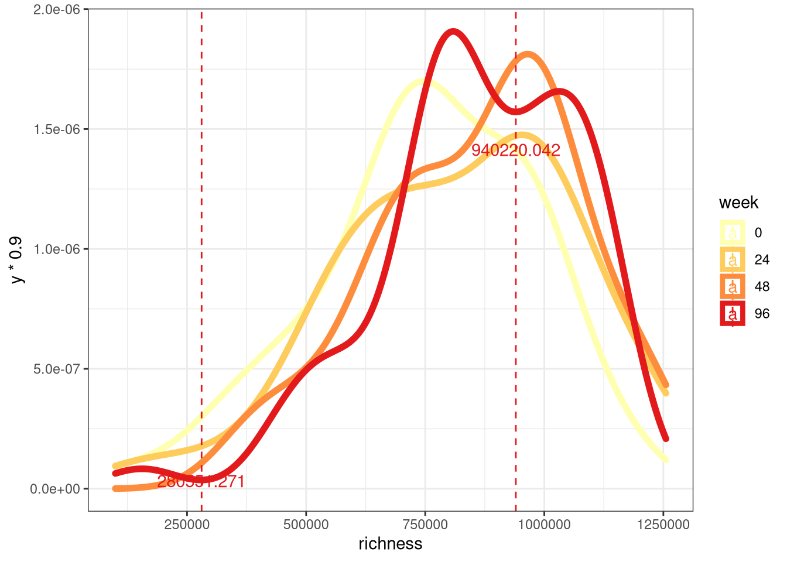
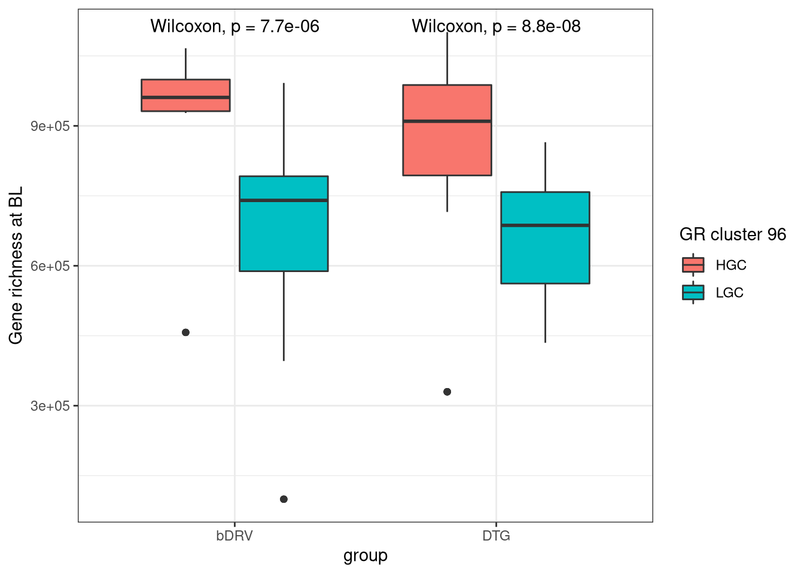
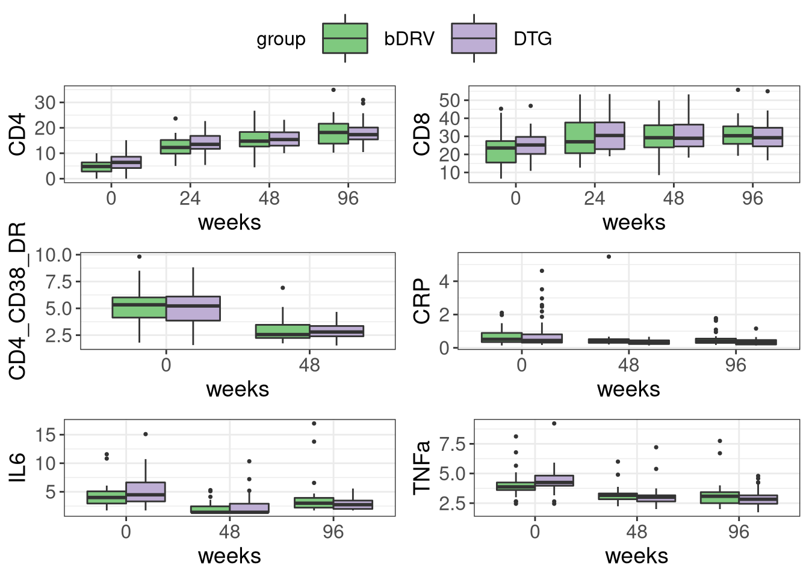
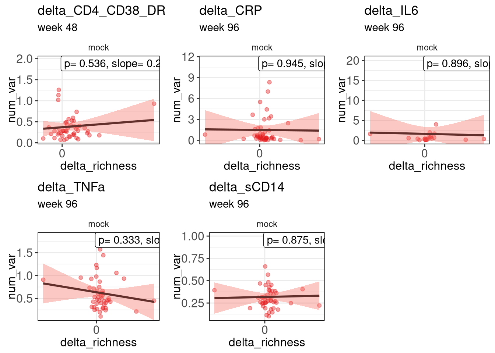
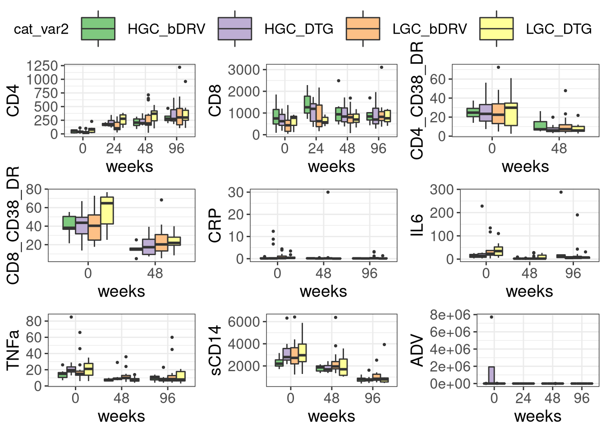
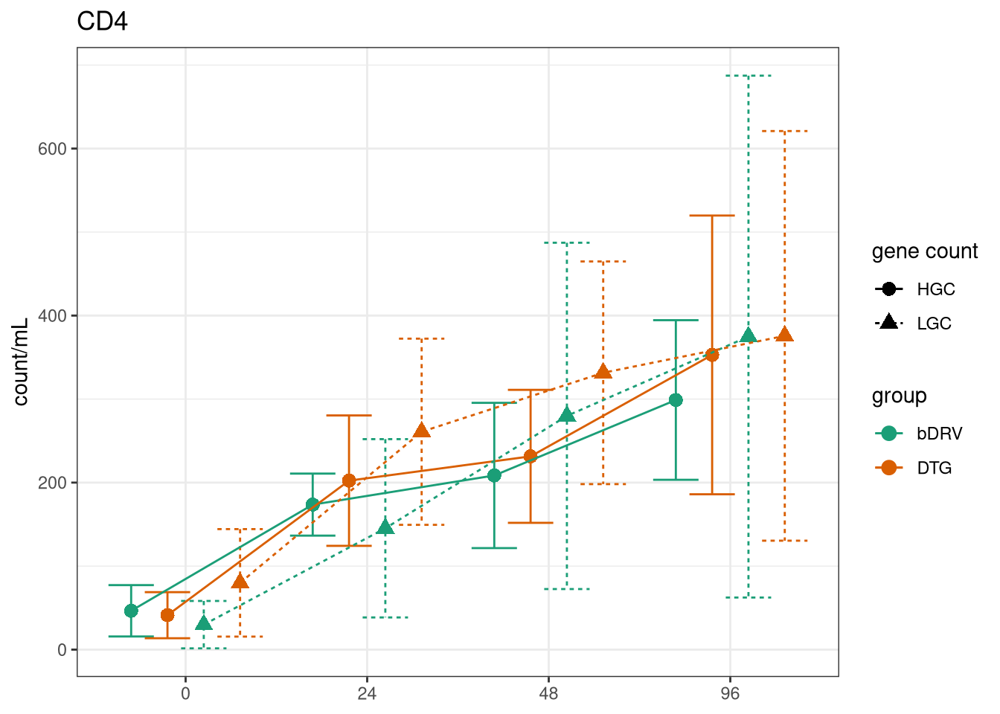
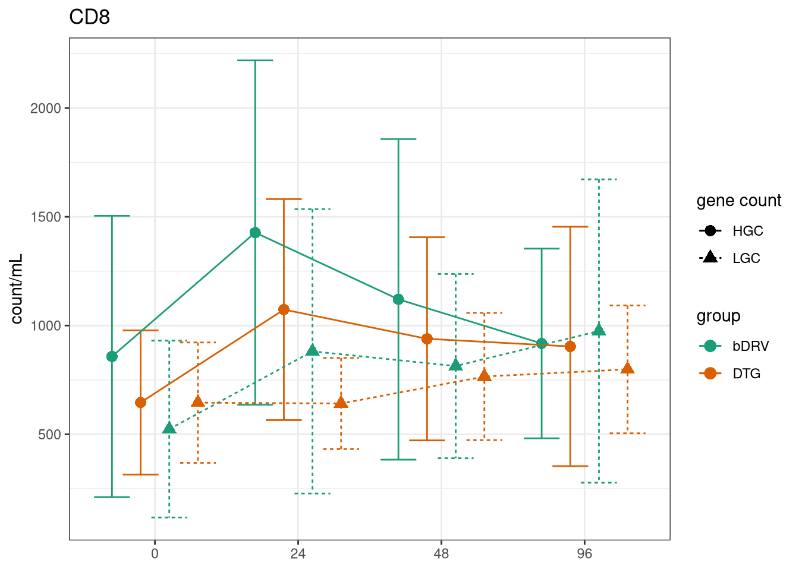

317_GeneRichness_Inflammation
Carlos Blázquez Bondia
2022-12-15
Last updated: 2023-05-26
Checks: 7 0
Knit directory: advanz4/
This reproducible R Markdown analysis was created with workflowr (version 1.7.0). The Checks tab describes the reproducibility checks that were applied when the results were created. The Past versions tab lists the development history.
Great! Since the R Markdown file has been committed to the Git repository, you know the exact version of the code that produced these results.
Great job! The global environment was empty. Objects defined in the global environment can affect the analysis in your R Markdown file in unknown ways. For reproduciblity it’s best to always run the code in an empty environment.
The command set.seed(20211203) was run prior to running the code in the R Markdown file. Setting a seed ensures that any results that rely on randomness, e.g. subsampling or permutations, are reproducible.
Great job! Recording the operating system, R version, and package versions is critical for reproducibility.
Nice! There were no cached chunks for this analysis, so you can be confident that you successfully produced the results during this run.
Great job! Using relative paths to the files within your workflowr project makes it easier to run your code on other machines.
Great! You are using Git for version control. Tracking code development and connecting the code version to the results is critical for reproducibility.
The results in this page were generated with repository version 85710c1. See the Past versions tab to see a history of the changes made to the R Markdown and HTML files.
Note that you need to be careful to ensure that all relevant files for the analysis have been committed to Git prior to generating the results (you can use wflow_publish or wflow_git_commit). workflowr only checks the R Markdown file, but you know if there are other scripts or data files that it depends on. Below is the status of the Git repository when the results were generated:
Ignored files:
Ignored: .RData
Ignored: .Rhistory
Ignored: .Rproj.user/
Ignored: analysis/.Rhistory
Ignored: analysis/420_Taxonomy_DA_cache/
Ignored: analysis/505_Adenovirus_Analysis_cache/
Ignored: analysis/510_Function_DA_cache/
Ignored: data/mre.rds
Untracked files:
Untracked: output/BMI_vs_GR.pdf
Unstaged changes:
Modified: analysis/311_GR_vs_BMI.Rmd
Modified: analysis/320_Beta_Diversity.Rmd
Modified: code/group_comparisons.R
Modified: output/mre_data/CatalogMapping/IGC/lmm/lmm_time_point_by_group.pdf
Note that any generated files, e.g. HTML, png, CSS, etc., are not included in this status report because it is ok for generated content to have uncommitted changes.
These are the previous versions of the repository in which changes were made to the R Markdown (analysis/317_GeneRichness_vs_Inflammation.Rmd) and HTML (docs/317_GeneRichness_vs_Inflammation.html) files. If you’ve configured a remote Git repository (see ?wflow_git_remote), click on the hyperlinks in the table below to view the files as they were in that past version.
| File | Version | Author | Date | Message |
|---|---|---|---|---|
| Rmd | 209eb6d | cblazquez | 2023-04-28 | Added all info for BMI and updated alluvial plot |
| Rmd | 72f1533 | cblazquez | 2023-04-18 | Updated website |
| html | 72f1533 | cblazquez | 2023-04-18 | Updated website |
| Rmd | 0aef819 | cblazquez-irsi | 2023-04-13 | fixed bug on GR_inflammation |
| Rmd | efdac31 | cblazquez-irsi | 2023-04-13 | Reestructured website |
| Rmd | b9e2fd4 | cblazquez-irsi | 2023-03-22 | Fixed rendering bugs on 310.Rmd |
| html | b9e2fd4 | cblazquez-irsi | 2023-03-22 | Fixed rendering bugs on 310.Rmd |
| Rmd | 54b8abb | cblazquez-irsi | 2023-03-16 | fixed problem with sCD14 |
| html | 54b8abb | cblazquez-irsi | 2023-03-16 | fixed problem with sCD14 |
| Rmd | 5ba2c0e | cblazquez-irsi | 2023-03-16 | Added evolution of inflammation markers per GR group |
| html | 5ba2c0e | cblazquez-irsi | 2023-03-16 | Added evolution of inflammation markers per GR group |
| Rmd | e1710d2 | cblazquez-irsi | 2023-03-07 | started analysis n GR vs BMI |
| html | e1710d2 | cblazquez-irsi | 2023-03-07 | started analysis n GR vs BMI |
| Rmd | ad0a04c | cblazquez | 2023-02-16 | Started correlation of GR vs Inflammation |
# mymre <- aws.s3::s3readRDS(bucket = "s3://mistral-wp6-advanz4", object = "metagenome/WMGS/MREObject.rds", region = "eu-west-1")
# metadata <-get_meta(mymre)
mymre <- here::here("data","filt_mre.rds") %>%
readRDS(.)
metadata <-
here::here("Metadata") %>%
file.info(list.files(., full.names = T)) %>%
rownames() %>%
magrittr::extract(str_detect(.,"clean_metadata")) %>%
sort(decreasing = T) %>%
magrittr::extract(1L) %>%
read.csv() %>%
column_to_rownames("SampleID") %>%
mutate(SampleID = rownames(.))
cat_df <-
here::here("Metadata", "CategoricalVariables.txt") %>%
read.delim(., header = T)
cat_vector <- cat_df %>%
pull(CategoricalVariable)
long_var <- here::here("Metadata", "LongitudinalVariables.txt") %>%
read.delim(., header = T) %>%
pull(LongitudinalVariable)
id_var <- here::here("Metadata", "LongitudinalVariables.txt") %>%
read.delim(., header = T) %>%
pull(LinkVariable)
num_var <- here::here("Metadata", "NumericalVariables.txt") %>%
read.delim(., header = T) %>%
pull(NumericalVariable)#### This chunk is for updating the mre internally as new variables come out. Once the final mre is done this chunk will be removed.
devtools::load_all("../WMGSPipeline")
mymre <- filter_samples(mre = mymre, sample_ids = metadata$SampleID)
mymre@metadata@metadata_df <- tibble(metadata)
mymre@taxa@metaphlan@phyloseq@sam_data <- metadata %>%
phyloseq::sample_data(.)
#
# mymre@taxa@metaphlan@phyloseq_sec@sam_data <- metadata %>%
# phyloseq::sample_data(.)
mymre@metadata@categorical_vals <- here::here("Metadata", "CategoricalVariables.txt") %>%
read.delim(., header = T) %>%
tibble()
mymre@metadata@numeric_vals <- here::here("Metadata", "NumericalVariables.txt") %>%
read.delim(., header = T) %>%
tibble()
mymre@metadata@longitudinal_vals <- here::here("Metadata", "LongitudinalVariables.txt") %>%
read.delim(., header = T) %>%
tibble()
phy <- get_phyloseq(mymre, type = "metaphlan")Basal exploration of inflammation markers
Perform basic distributin analysis of each marker at baseline, test for imbalances between groups which may be creating a bias.
library(compareGroups)
metadata %>%
dplyr::select(record_id, time_point, group, num_var) %>%
mutate(sCD14 = as.numeric(sCD14)) %>%
dplyr::filter(time_point == 0) %>%
compareGroups::compareGroups(formula(paste("group", "~", paste(num_var, collapse = " + "), sep = " ")), data = .) %>%
compareGroups::createTable(.,show.n = T)
--------Summary descriptives table by 'group'---------
_____________________________________________________
bDRV DTG p.overall N
N=39 N=40
¯¯¯¯¯¯¯¯¯¯¯¯¯¯¯¯¯¯¯¯¯¯¯¯¯¯¯¯¯¯¯¯¯¯¯¯¯¯¯¯¯¯¯¯¯¯¯¯¯¯¯¯¯
CD4 30.9 (26.5) 51.5 (43.0) 0.012 79
CD8 606 (486) 670 (403) 0.529 79
CD4_CD38_DR 30.4 (19.4) 29.1 (17.7) 0.750 79
CD8_CD38_DR 42.3 (14.9) 46.0 (17.4) 0.311 79
CRP 0.66 (0.97) 1.86 (4.17) 0.082 79
IL6 25.2 (31.2) 37.6 (48.6) 0.261 55
TNFa 17.4 (10.7) 20.7 (12.4) 0.203 79
sCD14 3096 (1251) 3012 (1294) 0.770 79
ADV 3249 (7784) 703266 (2325877) 0.342 23
¯¯¯¯¯¯¯¯¯¯¯¯¯¯¯¯¯¯¯¯¯¯¯¯¯¯¯¯¯¯¯¯¯¯¯¯¯¯¯¯¯¯¯¯¯¯¯¯¯¯¯¯¯ No significant changes could be observed in any inflammation marker, except for CD4 counts, which is still a farily small change.
Gene richness correlations
Now to the main point of this document. The first thing to do is to assess any correlation between initial GR and inflammation markers.
First let’s look how richness distributes across time, this will allow us to choose the best correlation and possibly stratify the population between low and high gene richness.
peaks_df <-
c(0,24,48,96) %>%
purrr::set_names() %>%
purrr::map_dfr(function(tp){
igc_df %>%
dplyr::filter(!is.na(richness), long_var == tp) %>%
dplyr::pull(richness) %>%
density() %>%
peak_finder(., goal = "min") %>%
dplyr::mutate(long_var = tp)
})
igc_df %>%
dplyr::filter(!is.na(richness)) %>%
ggplot(aes(x = richness, color = as.factor(long_var))) +
geom_density(lwd = 2) +
scale_color_brewer(palette = "YlOrRd") +
geom_vline(data = peaks_df, aes(xintercept = x, color = as.factor(long_var)), lty = 2) +
geom_text(data = peaks_df, aes(x= x, y = y*.9, color = as.factor(long_var), label = round(x,3))) +
theme_bw() +
labs(color = "week")
It seems richness is bimodal, with both peaks becoming increasingly separate as the study goes on. There seems to be no shift on the overall distribution. Instead, patients with really low microbiome counts tend to move towards one of the the two peaks (LGC and HGC) to check wether patients are inherently prone to move towards either peak, we could check differences in BL GR between LGC and HGC.
peak <-
igc_df %>%
dplyr::filter(!is.na(richness), long_var == 96) %>%
dplyr::pull(richness) %>%
density() %>%
peak_finder(., goal = "min") %>%
dplyr::mutate(long_var = 96) %>%
dplyr::filter(x == max(x)) %>%
dplyr::pull(x)
igc_df %>%
group_by(link_var) %>%
dplyr::filter(long_var %in% c(0,96)) %>%
dplyr::filter(n() == 2) %>%
dplyr::mutate(gr0 = richness[long_var == 0],
gr96 = richness[long_var == 96]) %>%
dplyr::select(SampleID,link_var, cat_var, gr0, gr96) %>%
unique() %>%
ungroup() %>%
dplyr::filter(!is.na(gr0), !is.na(gr96)) %>%
cor_test(., gr96, gr0, method = "spearman")# A tibble: 1 × 6
var1 var2 cor statistic p method
<chr> <chr> <dbl> <dbl> <dbl> <chr>
1 gr96 gr0 0.53 73319. 0.0000000166 Spearmanigc_df <-
igc_df %>%
group_by(link_var) %>%
dplyr::filter(long_var %in% c(0,96)) %>%
dplyr::filter(n() == 2) %>%
dplyr::mutate(gr0 = richness[long_var == 0],
gr96 = richness[long_var == 96]) %>%
dplyr::select(link_var, gr0, gr96) %>%
unique() %>%
dplyr::filter(!is.na(gr0), !is.na(gr96)) %>%
dplyr::mutate( gr_group = case_when(gr96 >= peak ~ "HGC",
gr96 < peak ~ "LGC")) %>%
right_join(igc_df, by = "link_var")
igc_df %>%
ggplot(aes(x = cat_var, y = gr0, fill = gr_group)) +
geom_boxplot() +
stat_compare_means(method = "wilcox.test") +
theme_bw() +
labs( y = "Gene richness at BL", x = "group", fill = "GR cluster 96")
Create a corr table and heatmap. This will be a good exploratory analysis to see which inflammation markers change with the microbiome. This is a longitudinal study, which means time may be an important variable we need to account with the models. A good exploratory first test will be to correlate markers with gene richness at basal. Then a correlation of deltas may give information on those who grow more depending on gene richness.
num_var %>%
purrr::set_names() %>%
purrr::map_dfr(function(nv) {
print(nv)
igc_df %>%
dplyr::filter(long_var == 0) %>%
dplyr::select(SampleID, cat_var, nv, richness) %>%
dplyr::mutate(!!sym(nv) := as.numeric(!!sym(nv))) %>%
ungroup() %>%
cor_test("richness", nv, method = "spearman")
})[1] "CD4"
[1] "CD8"
[1] "CD4_CD38_DR"
[1] "CD8_CD38_DR"
[1] "CRP"
[1] "IL6"
[1] "TNFa"
[1] "sCD14"
[1] "ADV"# A tibble: 9 × 6
var1 var2 cor statistic p method
<chr> <chr> <dbl> <dbl> <dbl> <chr>
1 richness CD4 0.17 47338. 0.155 Spearman
2 richness CD8 0.07 53166. 0.566 Spearman
3 richness CD4_CD38_DR -0.079 61661. 0.516 Spearman
4 richness CD8_CD38_DR -0.047 59815. 0.702 Spearman
5 richness CRP -0.13 64681. 0.277 Spearman
6 richness IL6 0.1 16535. 0.488 Spearman
7 richness TNFa -0.029 58827. 0.81 Spearman
8 richness sCD14 -0.11 63384 0.368 Spearman
9 richness ADV -0.17 2072 0.448 SpearmanApparently, no correlation could be found between GR and inflammation markers at basal. Let’s look for the longitudinal approach.
num_var %>%
purrr::set_names() %>%
purrr::map(function(nv){
print(nv)
igc_df %>%
group_by(link_var) %>%
dplyr::filter(long_var %in% c(0,48)) %>%
dplyr::filter(n() == 2) %>%
dplyr::mutate(num_var = as.numeric(!!sym(nv))) %>%
dplyr::mutate(delta_nv := num_var[long_var == 48]/num_var[long_var == 0],
delta_gr = richness[long_var == 48]/richness[long_var == 0]) %>%
filter(!is.na(num_var)) %>%
group_by(cat_var,.drop = T) %>%
# ungroup() %>%
rstatix::wilcox_test(num_var ~ long_var)
})[1] "CD4"
[1] "CD8"
[1] "CD4_CD38_DR"
[1] "CD8_CD38_DR"
[1] "CRP"
[1] "IL6"
[1] "TNFa"
[1] "sCD14"
[1] "ADV"$CD4
# A tibble: 2 × 8
cat_var .y. group1 group2 n1 n2 statistic p
* <chr> <chr> <chr> <chr> <int> <int> <dbl> <dbl>
1 bDRV num_var 0 48 30 30 21 2.35e-10
2 DTG num_var 0 48 30 29 15 2.01e-10
$CD8
# A tibble: 2 × 8
cat_var .y. group1 group2 n1 n2 statistic p
* <chr> <chr> <chr> <chr> <int> <int> <dbl> <dbl>
1 bDRV num_var 0 48 30 30 272 0.00801
2 DTG num_var 0 48 30 29 312 0.0629
$CD4_CD38_DR
# A tibble: 2 × 8
cat_var .y. group1 group2 n1 n2 statistic p
* <chr> <chr> <chr> <chr> <int> <int> <dbl> <dbl>
1 bDRV num_var 0 48 30 30 766 0.00000309
2 DTG num_var 0 48 30 29 754 0.000000243
$CD8_CD38_DR
# A tibble: 2 × 8
cat_var .y. group1 group2 n1 n2 statistic p
* <chr> <chr> <chr> <chr> <int> <int> <dbl> <dbl>
1 bDRV num_var 0 48 30 30 756. 0.0000065
2 DTG num_var 0 48 30 29 768 0.000000462
$CRP
# A tibble: 2 × 8
cat_var .y. group1 group2 n1 n2 statistic p
* <chr> <chr> <chr> <chr> <int> <int> <dbl> <dbl>
1 bDRV num_var 0 48 30 22 380. 0.354
2 DTG num_var 0 48 30 22 463 0.0141
$IL6
# A tibble: 2 × 8
cat_var .y. group1 group2 n1 n2 statistic p
* <chr> <chr> <chr> <chr> <int> <int> <dbl> <dbl>
1 bDRV num_var 0 48 18 30 475 0.0000061
2 DTG num_var 0 48 22 30 569 0.00000485
$TNFa
# A tibble: 2 × 8
cat_var .y. group1 group2 n1 n2 statistic p
* <chr> <chr> <chr> <chr> <int> <int> <dbl> <dbl>
1 bDRV num_var 0 48 30 30 715 0.0000866
2 DTG num_var 0 48 30 30 790 0.000000487
$sCD14
# A tibble: 2 × 8
cat_var .y. group1 group2 n1 n2 statistic p
* <chr> <chr> <chr> <chr> <int> <int> <dbl> <dbl>
1 bDRV num_var 0 48 30 30 706 0.000158
2 DTG num_var 0 48 30 30 768 0.00000062
$ADV
# A tibble: 2 × 8
cat_var .y. group1 group2 n1 n2 statistic p
* <chr> <chr> <chr> <chr> <int> <int> <dbl> <dbl>
1 bDRV num_var 0 48 9 12 64 0.508
2 DTG num_var 0 48 8 10 46 0.633res_list <-
num_var[!num_var %in% c("CD8_CD38_DR", "ADV")] %>%
purrr::set_names() %>%
purrr::map(function(nv){
print(nv)
igc_df %>%
dplyr::mutate(num_var := as.numeric(!!sym(nv))) %>%
filter(!is.na(num_var)) %>%
get_comp_boxplots(dat = .,cat_var = "cat_var",num_var = "num_var", long_var = "long_var",link_var = "link_var",y_trans = "sqrt", pal = "Accent") %>%
purrr::pluck("plot") +
labs(y = nv, fill = "group")
})[1] "CD4"
[1] "CD8"
[1] "CD4_CD38_DR"
[1] "CRP"
[1] "IL6"
[1] "TNFa"
[1] "sCD14"test_list <-
get_group_comparisons(dat = igc_df,cat_vector = "cat_var",num_vector = num_var,long_var = "long_var",link_var = "link_var", comps = c("bDRV","DTG"), graph_coords = T) %>%
pluck("cat_var") %>%
purrr::map(~{pluck(.x, "test")})
num_var %>%
purrr::set_names() %>%
purrr::map(function(nv) {
igc_df %>%
dplyr::filter(!is.na(!!sym(nv))) %>%
dplyr::mutate(num_var = as.numeric(!!sym(nv)),
sd_var = sd(num_var, na.rm = T),
med_var = median(num_var)) %>%
ggplot(., aes(x = factor(long_var), y = med_var)) +
# geom_boxplot(aes(fill = cat_var)) +
# geom_jitter(aes(colour = rec_group )) +
geom_point(
aes(
group = cat_var,
shape = cat_var,
color = cat_var),
size = 3,
position = position_dodge(.8)
) +
geom_line(
aes(group = cat_var,
color = cat_var),
position = position_dodge(0.8),
lwd = 1
) +
# geom_line(data = df, aes(x = factor(long_var), y = richness, group = link_var, color = recovery, lty = cat_var), inherit.aes = F, alpha = .4) +
geom_errorbar(
aes(
ymin = med_var - sd_var,
ymax = med_var + sd_var,
group = cat_var,
color = cat_var
),
width = .2,
position = position_dodge(0.8)
) +
labs(x = "weeks", y = nv) +
# scale_color_brewer(palette = "Dark2") +
scale_color_viridis_d(
option = "magma",
begin = .1,
end = .8,
direction = 1
) +
theme_bw() +
stat_pvalue_manual(test_list[[nv]], inhertit.aes = F , hide.ns = T) +
theme(axis.title = element_text(face = "bold"))
})$CD4
$CD8
$CD4_CD38_DR
| Version | Author | Date |
|---|---|---|
| 72f1533 | cblazquez | 2023-04-18 |
$CD8_CD38_DR
| Version | Author | Date |
|---|---|---|
| 72f1533 | cblazquez | 2023-04-18 |
$CRP
| Version | Author | Date |
|---|---|---|
| 72f1533 | cblazquez | 2023-04-18 |
$IL6
| Version | Author | Date |
|---|---|---|
| 72f1533 | cblazquez | 2023-04-18 |
$TNFa
| Version | Author | Date |
|---|---|---|
| 72f1533 | cblazquez | 2023-04-18 |
$sCD14
| Version | Author | Date |
|---|---|---|
| 72f1533 | cblazquez | 2023-04-18 |
$ADV
| Version | Author | Date |
|---|---|---|
| 72f1533 | cblazquez | 2023-04-18 |
ggarrange(plotlist = res_list, nrow = 3, ncol = 2, common.legend = T)$`1`
| Version | Author | Date |
|---|---|---|
| 72f1533 | cblazquez | 2023-04-18 |
$`2`
| Version | Author | Date |
|---|---|---|
| 72f1533 | cblazquez | 2023-04-18 |
attr(,"class")
[1] "list" "ggarrange"There are significant differences in both CRP and sCD14, which were lower in the DTG group. CRP became significant at week 96 only, while sCD14 became significant after 48 weeks, and kept doing so at week 96
Inflammation markers by gene richness
Baseline
First let’s check if Gene Richness had any effect on the baseline levels of inflammation markers.
filt_vars <- num_var[!num_var %in% c("CD4", "CD8","CD8_CD38_DR", "ADV")]
deltas <-
igc_df %>%
dplyr::select(SampleID, link_var, long_var, cat_var, richness,filt_vars) %>%
dplyr::group_by(link_var) %>%
dplyr::filter(long_var %in% c(0,24,48,96)) %>%
dplyr::filter(min(long_var) == 0) %>%
# dplyr::filter(n() == 2) %>%
dplyr::mutate(delta_richness = (richness-richness[long_var == 0]) / (richness + richness[long_var == 0]),
across(.cols = filt_vars,
.fns = ~ .x / .x[long_var == 0],
.names = "delta_{.col}" )) %>%
dplyr::ungroup() %>%
dplyr::select(SampleID, link_var, cat_var, long_var, contains("delta"))
new_numvars <- paste("delta",filt_vars,sep= "_")
new_numvars %>%
purrr::set_names() %>%
purrr::map(~ {
deltas %>%
ggplot(., aes(x=!!sym(.x), y = delta_richness, colour = cat_var)) +
geom_point() +
theme_bw()
}) %>%
ggpubr::ggarrange(plotlist = ., common.legend = T)
lmms <-
deltas %>%
# dplyr::mutate(cat_var = "mock") %>%
get_lmm_effects(
.,
cat_vector = "cat_var",
long_var = "delta_richness",
num_vector = new_numvars,
link_var = "link_var"
) [1] "cat_var"
[1] "delta_CD4_CD38_DR"
[1] "delta_CRP"
[1] "delta_IL6"
[1] "delta_TNFa"
[1] "delta_sCD14"new_numvars %>%
purrr::set_names() %>%
purrr::map(~ {
max_tp <- deltas %>%
dplyr::filter(!is.na(!!sym(.x))) %>%
dplyr::pull(long_var) %>%
max()
deltas %>%
dplyr::mutate(cat_var = "mock") %>%
dplyr::filter(!is.na(!!sym(.x)),
!is.na(delta_richness)) %>%
dplyr::filter(long_var == max_tp) %>%
create_LMM(
.,
num_var = .x,
long_var = "delta_richness",
cat_var = "cat_var",
link_var = "link_var",
breakpoints = NULL
) %>%
purrr::pluck("plot") +
scale_x_continuous(breaks = c(0,2,4,6,8)) +
labs(subtitle = paste("week", max_tp)) +
# scale_y_continuous(trans = "log2") +
theme(axis.title.x = element_text(size = 12),
axis.title.y = element_text(size = 12, angle = 90))
}) %>%
ggpubr::ggarrange(plotlist = .)
# deltas %>%
# dplyr::filter(long_var == max(long_var)) %>%
# dplyr::select(delta_richness, new_numvars) %>%
# cor_test(use = "complete.obs") %>%
# corrplot::corrplot(corr = .)
# dplyr::filter()Differences by groups
igc_df <-
igc_df %>%
dplyr::filter(!is.na(gr_group)) %>%
mutate(cat_var2 = paste(gr_group, cat_var, sep = "_"))
my_list <-
num_var %>%
purrr::set_names() %>%
purrr::map(function(nv){
igc_df %>%
dplyr::filter(!is.na(!!sym(nv)), !is.na(gr_group)) %>%
mutate(cat_var2 = paste(gr_group, cat_var, sep = "_")) %>%
# get_lmm_effects()
get_comp_boxplots(cat_var = "cat_var2", num_var = nv, long_var = "long_var",link_var = "link_var")
})
myPlotList <- map(my_list, pluck, "plot")
ggarrange(plotlist = myPlotList, common.legend = T)
cat_df <-
num_var %>%
purrr::set_names() %>%
purrr::map_dfr(function(nv){
obj <-
igc_df %>%
dplyr::filter(!is.na(!!sym(nv)), !is.na(gr_group)) %>%
mutate(cat_var2 = paste(gr_group, cat_var, sep = "_")) %>%
get_group_comparisons(.,link_var = "link_var", long_var = "long_var",cat_vector = "cat_var2",num_vector = nv,type = "categorical", comps = unique(igc_df$cat_var2))
objtest <- obj %>% pluck("cat_var2",nv,"test")
objstats <- obj %>% pluck("cat_var2",nv,"stats") %>%
mutate(stat = paste(round(median,2)," [",round(iqr,2),"]", sep = ""))
objtest %>%
pivot_longer(cols = c("group1","group2")) %>%
dplyr::rename(cat_var = value) %>%
dplyr::left_join(objstats[,c("cat_var","long_var","stat")], by = c("cat_var", "long_var")) %>%
pivot_wider(names_from = "name", values_from = c("cat_var", "stat")) %>%
dplyr::select(long_var, group1 = cat_var_group1, group2 = cat_var_group2, contains("stat"), p.adj)
})
cat_df %>%
dplyr::filter(p.adj < 0.05)# A tibble: 0 × 7
# … with 7 variables: long_var <int>, group1 <chr>, group2 <chr>,
# statistic <dbl>, stat_group1 <chr>, stat_group2 <chr>, p.adj <dbl>long_df <-
num_var %>%
purrr::set_names() %>%
purrr::map_dfr(function(nv){
obj <-
igc_df %>%
dplyr::filter(!is.na(!!sym(nv)), !is.na(gr_group)) %>%
mutate(cat_var2 = paste(gr_group, cat_var, sep = "_")) %>%
get_group_comparisons(.,link_var = "link_var", long_var = "long_var",cat_vector = "cat_var2",num_vector = nv,type = "longitudinal", comps = c(0,48))
obj %>%
pluck("cat_var2",nv,"test") %>%
rstatix::adjust_pvalue( method = "BH", p.col = "p") %>%
full_join(obj$cat_var2[[nv]]$stats, by = "cat_var")%>%
dplyr::mutate(.y. = nv) %>%
dplyr::select(cat_var, group1, group2,num_var = .y., contains("median"), contains("iqr"), "p.adj")
})
long_df %>%
dplyr::filter(p.adj < 0.05 )# A tibble: 18 × 11
cat_var group1 group2 num_var medianChange median1 median2 iqr1 iqr2
<chr> <chr> <chr> <chr> <dbl> <dbl> <dbl> <dbl> <dbl>
1 HGC_bDRV 0 48 CD4 163. 63.5 206. 6.65e1 1.59e+2
2 HGC_DTG 0 48 CD4 161 40 196 3.80e1 1.09e+2
3 LGC_bDRV 0 48 CD4 190 18 192 4.20e1 2.09e+2
4 LGC_DTG 0 48 CD4 228 70 370 8.55e1 1.99e+2
5 HGC_DTG 0 48 CD4_CD38_… -12.5 19.1 6.01 2.72e1 4.89e+0
6 LGC_bDRV 0 48 CD4_CD38_… -18 24 7.3 2.06e1 7.22e+0
7 LGC_DTG 0 48 CD4_CD38_… -22.6 31.1 5.94 3.47e1 6.48e+0
8 HGC_bDRV 0 48 CD8_CD38_… -29.6 43.0 15.0 1.76e1 4.07e+0
9 HGC_DTG 0 48 CD8_CD38_… -22.3 42.4 17.3 2.45e1 1.86e+1
10 LGC_bDRV 0 48 CD8_CD38_… -15.9 39.3 20.3 3.10e1 2.17e+1
11 LGC_DTG 0 48 CD8_CD38_… -36 65.7 21.9 3.62e1 1.18e+1
12 HGC_DTG 0 48 IL6 -14 16 2 1.87e1 6.67e-1
13 HGC_DTG 0 48 TNFa -9.5 18.5 9 5.17e0 1.58e+0
14 LGC_bDRV 0 48 TNFa -5 15 10 5.67e0 4.33e+0
15 LGC_DTG 0 48 TNFa -11 20 7 1.9 e1 4.00e+0
16 HGC_DTG 0 48 sCD14 -1168 2800 1690 9.85e2 6.13e+2
17 LGC_bDRV 0 48 sCD14 -836 2788 1956 1.70e3 7.63e+2
18 LGC_DTG 0 48 sCD14 -1320 2876 1700 2.31e3 1.53e+3
# … with 2 more variables: iqr_change <dbl>, p.adj <dbl>spaghetti_plot_list <-
num_var[!num_var %in% c("ADV")] %>%
purrr::set_names() %>%
purrr::map(function(nv){
name <- case_when(nv == "CD4_CD38_DR" ~ "CD4+ CD38+ DR+",
nv == "CD8_CD38_DR" ~ "CD8+ CD38+ DR+",
TRUE ~ nv)
un <- ifelse(nv %in% c("CD4_CD38_DR","CD8_CD38_DR"), "units",
metadata %>%
dplyr::pull(paste("units", nv, sep = "_")) %>%
discard(is.na) %>% unique())
summ_df <-
igc_df %>%
dplyr::filter(!is.na(!!sym(nv)), !is.na(gr_group)) %>%
group_by(cat_var, gr_group, long_var) %>%
dplyr::summarise(mean_gr = mean(!!sym(nv)),
sd_gr = sd(!!sym(nv))) %>%
dplyr::mutate(cat_var2 = paste(gr_group, cat_var, sep = "_"),
long_var = as.factor(long_var))
tests <-
igc_df %>%
dplyr::filter(!is.na(nv)) %>%
dplyr::rename(num_var = !!sym(nv)) %>%
dplyr::mutate(cat_var2 = paste(gr_group, cat_var, sep = "_")) %>%
dplyr::filter(!is.na(num_var)) %>%
dplyr::group_by(long_var) %>%
rstatix::wilcox_test( num_var ~ cat_var2) %>%
rstatix::add_xy_position(x = "long_var", group = "cat_var2")
igc_df %>%
dplyr::filter(!is.na(!!sym(nv)), !is.na(gr_group)) %>%
mutate(cat_var2 = paste(gr_group, cat_var, sep = "_"),
long_var = as.factor(long_var)) %>%
ggplot(aes(
x = long_var,
y = !!sym(nv),
color = cat_var
)) +
geom_point(
data = summ_df,
aes(
x = long_var,
y = mean_gr,
color = cat_var,
shape = gr_group,
group = cat_var2
),
size = 3,
position = position_dodge(.8)
) +
geom_errorbar(
data = summ_df,
aes(
x = long_var,
ymin = mean_gr - sd_gr,
ymax = mean_gr + sd_gr,
color = cat_var,
lty = gr_group,
group = cat_var2
),
inherit.aes = F,
width = 1,
position = position_dodge(.8)
) +
geom_line(
data = summ_df,
aes(
x = long_var,
y = mean_gr,
color = cat_var,
lty = gr_group,
group = cat_var2
),
inherit.aes = F,
position = position_dodge(.8)
) +
# stat_smooth(method = "loess", alpha = .2, aes(fill = cat_var), position = position_dodge(.8)) +
theme_bw() +
labs(
x = "weeks",
y = un,
color = "group",
shape = "gene count",
lty = "gene count",
title = name
) +
stat_pvalue_manual(tests, label = "p.adj.signif", hide.ns = T) +
scale_color_brewer(palette = "Dark2") +
scale_fill_brewer(palette = "Dark2") +
theme(axis.title.x = element_blank())
# scale_x_continuous(breaks = c(0,48,96))
})
spaghetti_plot_list %>%
ggarrange(plotlist = ., common.legend = T, ncol = 2,nrow = 4) %>%
ggpubr::annotate_figure(bottom = text_grob("Weeks", size = 12, face = "bold")) %>%
ggsave(plot= ., device = "svg",path = here::here("output","figures"), filename = "inflammation.svg", dpi= 300, width = 15, height = 25, units = "cm")
spaghetti_plot_list$CD4
$CD8
| Version | Author | Date |
|---|---|---|
| 72f1533 | cblazquez | 2023-04-18 |
$CD4_CD38_DR
| Version | Author | Date |
|---|---|---|
| 72f1533 | cblazquez | 2023-04-18 |
$CD8_CD38_DR
| Version | Author | Date |
|---|---|---|
| 72f1533 | cblazquez | 2023-04-18 |
$CRP
| Version | Author | Date |
|---|---|---|
| 72f1533 | cblazquez | 2023-04-18 |
$IL6
| Version | Author | Date |
|---|---|---|
| 72f1533 | cblazquez | 2023-04-18 |
$TNFa
| Version | Author | Date |
|---|---|---|
| 72f1533 | cblazquez | 2023-04-18 |
$sCD14
| Version | Author | Date |
|---|---|---|
| 72f1533 | cblazquez | 2023-04-18 |
num_var <- num_var[!num_var == "ADV"]
sessionInfo()R version 4.0.5 (2021-03-31)
Platform: x86_64-redhat-linux-gnu (64-bit)
Running under: Fedora 34 (Workstation Edition)
Matrix products: default
BLAS/LAPACK: /usr/lib64/libflexiblas.so.3.1
locale:
[1] LC_CTYPE=en_US.UTF-8 LC_NUMERIC=C
[3] LC_TIME=en_US.UTF-8 LC_COLLATE=en_US.UTF-8
[5] LC_MONETARY=en_US.UTF-8 LC_MESSAGES=en_US.UTF-8
[7] LC_PAPER=en_US.UTF-8 LC_NAME=C
[9] LC_ADDRESS=C LC_TELEPHONE=C
[11] LC_MEASUREMENT=en_US.UTF-8 LC_IDENTIFICATION=C
attached base packages:
[1] stats graphics grDevices utils datasets methods base
other attached packages:
[1] nlme_3.1-158 compareGroups_4.5.1 ggpubr_0.4.0
[4] rstatix_0.7.0 metar_0.1.5 RColorBrewer_1.1-3
[7] forcats_0.5.1 stringr_1.4.0 dplyr_1.0.9
[10] purrr_0.3.4 readr_2.1.2 tidyr_1.2.0
[13] tibble_3.1.7 ggplot2_3.3.6 tidyverse_1.3.1
[16] devtools_2.4.3 usethis_2.1.6 workflowr_1.7.0
loaded via a namespace (and not attached):
[1] utf8_1.2.2 tidyselect_1.1.2 lme4_1.1-29
[4] htmlwidgets_1.5.4 grid_4.0.5 munsell_0.5.0
[7] codetools_0.2-18 chron_2.3-57 future_1.26.1
[10] withr_2.5.0 colorspace_2.0-3 Biobase_2.50.0
[13] phyloseq_1.34.0 highr_0.9 logger_0.2.2
[16] knitr_1.39 uuid_1.1-0 rstudioapi_0.13
[19] stats4_4.0.5 ggsignif_0.6.3.9000 officer_0.4.3
[22] listenv_0.8.0 labeling_0.4.2 git2r_0.30.1
[25] farver_2.1.0 rhdf5_2.34.0 rprojroot_2.0.3
[28] coda_0.19-4 parallelly_1.32.0 vctrs_0.4.1
[31] generics_0.1.2 xfun_0.31 R6_2.5.1
[34] arm_1.12-2 rhdf5filters_1.2.1 cachem_1.0.6
[37] assertthat_0.2.1 promises_1.2.0.1 networkD3_0.4
[40] scales_1.2.0 nnet_7.3-17 merTools_0.5.2
[43] gtable_0.3.0 globals_0.15.0 processx_3.6.1
[46] rlang_1.0.2 systemfonts_1.0.4 splines_4.0.5
[49] broom_0.8.0 yaml_2.3.5 reshape2_1.4.4
[52] abind_1.4-5 modelr_0.1.8 backports_1.4.1
[55] httpuv_1.6.5 HardyWeinberg_1.7.5 tools_4.0.5
[58] ellipsis_0.3.2 kableExtra_1.3.4 jquerylib_0.1.4
[61] biomformat_1.18.0 selbal_0.1.0 Rsolnp_1.16
[64] BiocGenerics_0.36.1 sessioninfo_1.2.2 Rcpp_1.0.8.3
[67] plyr_1.8.7 base64enc_0.1-3 zlibbioc_1.36.0
[70] ps_1.7.1 prettyunits_1.1.1 cowplot_1.1.1
[73] S4Vectors_0.28.1 haven_2.5.0 cluster_2.1.3
[76] fs_1.5.2 here_1.0.1 furrr_0.3.0
[79] DataExplorer_0.8.2 magrittr_2.0.3 data.table_1.14.2
[82] lmerTest_3.1-3 flextable_0.7.2 reprex_2.0.1
[85] truncnorm_1.0-8 mvtnorm_1.1-3 whisker_0.4
[88] pkgload_1.2.4 hms_1.1.1 mime_0.12
[91] evaluate_0.15 xtable_1.8-4 broom.mixed_0.2.9.4
[94] readxl_1.4.0 IRanges_2.24.1 gridExtra_2.3
[97] testthat_3.1.4 compiler_4.0.5 mice_3.14.0
[100] writexl_1.4.0 crayon_1.5.1 minqa_1.2.4
[103] htmltools_0.5.2 mgcv_1.8-40 later_1.3.0
[106] tzdb_0.3.0 lubridate_1.8.0 DBI_1.1.3
[109] dbplyr_2.2.0 MASS_7.3-57 boot_1.3-28
[112] Matrix_1.4-1 ade4_1.7-19 car_3.1-0
[115] permute_0.9-7 brio_1.1.3 cli_3.3.0
[118] parallel_4.0.5 igraph_1.3.2 pkgconfig_2.0.3
[121] getPass_0.2-2 numDeriv_2016.8-1.1 xml2_1.3.2
[124] foreach_1.5.2 svglite_2.1.0 bslib_0.3.1
[127] blme_1.0-5 webshot_0.5.3 multtest_2.46.0
[130] XVector_0.30.0 rvest_1.0.2 callr_3.7.0
[133] digest_0.6.29 vegan_2.6-2 Biostrings_2.58.0
[136] rmarkdown_2.14 cellranger_1.1.0 gdtools_0.2.4
[139] shiny_1.7.1 nloptr_2.0.3 lifecycle_1.0.1
[142] jsonlite_1.8.0 Rhdf5lib_1.12.1 carData_3.0-5
[145] viridisLite_0.4.0 desc_1.4.1 fansi_1.0.3
[148] pillar_1.7.0 lattice_0.20-45 fastmap_1.1.0
[151] httr_1.4.2 pkgbuild_1.3.1 survival_3.3-1
[154] glue_1.6.2 remotes_2.4.2 zip_2.2.0
[157] iterators_1.0.14 stringi_1.7.6 sass_0.4.1
[160] memoise_2.0.1 ape_5.6-2